전기공사기사 (2006-05-14 기출문제)
1과목: 전기응용 및 공사재료
1. 초음파 용접의 특징이 아닌 것은?
- 이종 금속의 용접도 가능하다.
- 고체상태에서 용접이므로 열적 영향이 크다.
- 가열이 필요하지 않다.
- 냉간압접 등에 비하여 가압하중이 적으므로 변형이 적다.
(정답률: 74%)

2. 휘도가 B[cd/m3]이고 반지름이 r[m]인 등휘도 완전 확산성 구 광원의 전광속 F[Im]은 얼마인가?
- 4 r2 B
- πr2 B
- π2 r2 B
- 4 π2 r2 B
(정답률: 69%)
3. 열차가 곡선 궤도를 운행할 대 차륜의 플런지와 레일 두부간의 측면 마찰을 피하기 위하여 내측 궤조의 궤간을 약간 넓히는 것을 무엇이라 하는가?
- 고도
- 유간
- 철차각
- 확도
(정답률: 84%)
4. 간접적인 저항가열에서는 발열체가 필요하며 발열체의 온도는 반드시 피열물의 온도보다 높으므로 발열체의 최고 사용온도는 가열온도보다 높아야 하므로 고온에서 안정성이 좋아야 한다. 발열체로서의 구비조건이 아닌 것은?
- 화학적으로 안전할 것
- 내열성이 클 것
- 연성 및 전성이 풍부하고 가공이 용이할 것
- 저항률이 비교적 크고, 온도계수가 클 것
(정답률: 86%)
5. 지정된 부식성의 산, 알칼리 또는 유해가스가 있는 장소에서 실용상 지장없이 사용할 수 있는 구조의 전동기는?
- 방적형
- 방진형
- 방수형
- 방식형
(정답률: 87%)
6. 전기 집진기는 무엇을 이용한 것인가?
- 와전류
- 누설전류
- 잔류자기
- 대전체간의 정전기력
(정답률: 90%)
7. 3상 유도전동기를 급속히 정지 또는 감속시킬 경우나 과속을 급히 막을 수 있는 가장 쉽고 효과적인 제동법은?
- 발전제동
- 와전류제동
- 희생제동
- 역상제동
(정답률: 91%)
8. 역 병렬로 된 2개의 SCR과 유사한 양방향성 3단자 다이리스터로서 AC 전력의 제어에 사용하는 것은?
- TRIAC
- SCS
- GTO
- LASCR
(정답률: 90%)
9. 평균 구면 광도 100[cd]의 전구 5개를 지름 10[m]인 원형의 실에 점등할 때 조명율을 0.5, 감광 보상률을 1.5로 하면 방의 평균 조도는 약 몇 [lx]인가?
- 18
- 23
- 27
- 32
(정답률: 75%)
10. 유전가열을 이용하지 않는 것은?
- 합성수지의 가열 성형
- 베니어판의 건조
- 고무의 유화
- 구리의 용접
(정답률: 83%)
11. 전선재료로서 구비조건이 틀린 것은?
- 도전율이 클 것
- 접속이 쉬울 것
- 내식성이 클 것
- 인장강도가 작을 것
(정답률: 92%)
12. COS를 설치할 때 함께 사용되는 재료가 아닌 것은?
- 소켓아이
- 브라켓트
- 퓨즈링크
- 내오손결합애자
(정답률: 76%)
13. 케이블 또는 콘덴서용 절연유는 다음과 같은 성질을 가져야 한다. 틀린 것은?
- 함침시키는 온도에서 점도가 클 것
- 유전손이 적을 것
- 열전도율이 작을 것
- 팽창 계수가 작을 것
(정답률: 74%)
14. 절연재료의 내열성에 의한 분류에서 B종 절연의 최고 사용 온도는 몇 [℃]인가?
- 90
- 130
- 155
- 180
(정답률: 88%)
15. 알칼리 축전지에서 소결식에 해당하는 초급방전형은?
- AM형
- AMH형
- AL형
- AH-S형
(정답률: 91%)
16. 다음 중 주상변압기를 전주에 설치하기 위하여 사용되는 금구류는?
- 행거밴드
- 암타이밴드
- 랙크
- 경완금
(정답률: 84%)
17. 다음 중 차단기의 종류가 아닌 것은?
- OCB
- ABB
- VCB
- DS
(정답률: 93%)
18. 제1종 접지공사의 접지선의 최소 굵기는 몇 [mm]인가? (단, 접지선으로 동선을 사용하는 경우임)(관련 규정 개정으 정답이 변경되었습니다. 여기서는 기존 정답 3번을 누르면 정답 처리 됩니다. 자세한 내용은 해설을 참고하세요.)
- 1.6
- 3.2
- 2.6
- 4.0
(정답률: 84%)
19. 다음 중 내열용 비닐절연전선의 약호 명칭은?
- HIV
- DV
- CV
- HDCC
(정답률: 77%)
20. 백열 전구에서 사용되는 필라멘트 재료의 구비조건으로 잘못 된 것은?
- 용융점이 높을 것
- 고유저항이 클 것
- 높은 온도에서 증발이 적을 것
- 선 팽창계수가 높은 것
(정답률: 83%)
2과목: 전력공학
21. 송전단 전압이 66[kV], 수전단 전압이 61[kV]인 송전선로에서 수전단의 부하를 끊은 경우 수전단 전압이 63[kV]라면 전압 변동률은 몇 [%]인가?
- 2.55
- 2.90
- 3.17
- 3.28
(정답률: 16%)
22. 환상선로의 단락보호에 사용하는 계전방식은?
- 비율차동 계전방식
- 방향거리 계전방식
- 과전류 계전방식
- 선택접지 계전방식
(정답률: 12%)
23. 그림과 같은 선로에서 A점의 차단기 용량은 몇[MVA]가 적당한가?
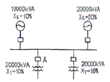
- 50
- 100
- 150
- 200
(정답률: 7%)
24. 선로 고장발생시 타 보호기기와의 협조에 의해 고장 구간을 신속히 개방하는 자동구간 개폐기로서 고장전류를 차단할 수 없어 차단 기능이 있는 후비보호장치와 직렬로 설치되어야 하는 배전용 개폐기는?
- 배전용 차단기
- 부하 개폐기
- 컷아웃 스위치
- 섹셔널라이저
(정답률: 11%)
25. 코로나 방지에 가장 효과적인 방법은?
- 선간거리를 증가시킨다.
- 선로의 이도를 작게 한다.
- 선로의 높이를 가급적 낮춘다.
- 전선의 외경을 크게 한다.
(정답률: 10%)
26. 취수구에 제수문을 설치하는 주된 목적은?
- 낙차를 높이기 위하여
- 홍수위를 낮추기 위하여
- 모래를 배제하기 위하여
- 유량을 조정하기 위하여
(정답률: 13%)
27. 송전선로에서 1선 지락시에 건전상의 전압 상승이 적은 접지방식은?
- 비접지 방식
- 직접접지 방식
- 저항접지 방식
- 소호리액터접지 방식
(정답률: 10%)
28. 현수애자에 대한 설명이 잘못된 것은?
- 애자를 연결하는 방법에 따라 클래비스형과 볼소켓형이 있다.
- 2~4층의 갓 모양의 자기편을 시멘트로 접착하고 그자기를 주철제 베이스로 지지한다.
- 애자의 연결 갯소를 가감함으로서 임의의 송전전압에 사용할 수 있다.
- 큰 하중에 대하여는 2연 또는 3연으로 하여 사용할수 있다.
(정답률: 3%)
29. 지상역률 0.6, 출력 480 [kW]인 부하에 병렬로 용량 400 [kVA]의 전력용 콘덴서를 설치하면 합성 역률은 어느 정도로 개선되는가?
- 0.75
- 0.86
- 0.89
- 0.94
(정답률: 11%)
30. 옥내배선의 굵기를 설계하는 요령으로 가장 적당하게 설명한 것은?
- 부하의 위치와 전압강하를 고려하여 결정하여야 한다.
- 승강기 등의 부하와 동일 굵기로 사용할 수 있도록 하여야 한다.
- 부하의 수용률과 허용전류를 고려하여 결정하여야한다.
- 전압강하, 허용전류, 기계적강도 등을 고려하여 결정하여야 한다.
(정답률: 9%)
31. 장거리 송전선로는 일반적으로 어떤 회로로 취급하여 회로를 해석하는가?
- 분산부하회로
- 집중정수회로
- 분포정수회로
- 특성임피던스회로
(정답률: 13%)
32. 전력계통을 연계시켜서 얻는 이득이 아닌 것은?
- 배후 전력이 커져서 단락용량이 작아진다.
- 부하의 부등성에서 오는 종합첨두부하가 저감된다.
- 공급 예비력이 절감된다.
- 공급 신뢰도가 향상된다.
(정답률: 9%)
33. 다음 중 송전계통의 절연협조에 있어서 절연레벨을 가장 낮게 잡고 있는 기기는?
- 피뢰기
- 단로기
- 변압기
- 차단기
(정답률: 12%)
34. 변압기 보호용 비율차동계전기를 사용하여 △-Y 결선의 변압기를 보호하려고 한다. 이 때 변압기 1,2차측에 설치하는 변류기의 결선 방식은?
- △-△
- △-Y
- Y-△
- Y-Y
(정답률: 13%)
35. 접지봉을 사용하여 희망하는 접지저항까지 줄일 수 없을 때 사용하는 것은?
- 차폐선
- 가공지선
- 크로스본드선
- 매설지선
(정답률: 13%)
36. 그림과 같은 T-S 선도를 갖는 열사이클은?
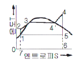
- 카르노사이클
- 랭킨사이클
- 재생사이클
- 재열사이클
(정답률: 12%)
37. 유효접지계통에서 피뢰기의 정격전압을 결정하는데 가장 중요한 요소는?
- 선로 애자련의 충격섬락전압
- 내부 이상전압 중 과도이상전압의 크기
- 유도뢰의 전압의 크기
- 1선지락 고장시 건전상의 대지전위 즉, 지속성 이상전압
(정답률: 9%)
38. 수력발전소에서 낙차를 취하기 위한 방식이 아닌 것은?
- 댐식
- 수로식
- 역조정지식
- 유역 변경식
(정답률: 10%)
39. 다음 모선의 종류가 아닌 것은?
- 단모선
- 2중모선
- 3중모선
- 환상모선
(정답률: 9%)
40. 저압 뱅킹(banking)방식에 대한 설명으로 옳은 것은?
- 깜박임현상이 심하게 나타난다.
- 저압 간선의 전압강하는 줄어지나 전력손실은 줄일 수 없다.
- 캐스케이딩 현상의 염려가 있다.
- 부하의 증가에 대한 융통성이 없다.
(정답률: 14%)
3과목: 전기기기
41. 3300/210 [V], 10 [kVA]의 단상변압기가 있다. %저항강하는 3[%], % 리액터스 강하는 4[%] 이다. 이 변압기가 무부하인 경우의 2차 단자전압은 약 몇 [V]인가? (단, 변압기는 지역률 80[%]일 때 정격출력을 낸다고 한다.)
- 168
- 216
- 220
- 228
(정답률: 6%)
42. 동기 발전기의 돌발 단락전류를 주로 제한하는 것은?
- 누설 리액턴스
- 동기 리액턴스
- 권선저항
- 역상 리액턴스
(정답률: 10%)
43. 단상 정류자 전동기의 일종인 단상 반발 전동기에 해당되는 것은?
- 시라게 전동기
- 아트킨손형 전동기
- 단상 직권정류자 전동기
- 반발유도 전동기
(정답률: 8%)
44. 변압기의 부하전류 및 전압이 일정하고, 주파수가 낮아졌을 때의 현상으로 옳은 것은?
- 철손 감소
- 철손 증가
- 동손 감소
- 동손 증가
(정답률: 10%)
45. 3상 유도전동기에서 2차측 저항을 2배로 하면 그 최대 토크는 어떻게 되는가?
- 2배로 된다.
- 1/2로 줄어든다.
- √2배가 된다.
- 변하지 않는다.
(정답률: 11%)
46. SCR에 관한 설명이다. 적당하지 않은 것은?
- 3단자 소자이다.
- 적은 게이트 신호로 대전력을 제어한다.
- 직류 전압만을 제어한다.
- 스위칭 소자이다.
(정답률: 14%)
47. 계자 권선이 전기자에 병렬로만 연결된 직류기는?
- 분권기
- 직권기
- 복권기
- 타여자기
(정답률: 11%)
48. 전원전압이 200[V]이고, 부하가 20[Ω]인 단상 반파정류회로의 부하전류는 약 몇 [A]인가?
- 125
- 4.5
- 17
- 8.2
(정답률: 10%)
49. 직류기의 전기자 권선을 중권으로 하였을 때 다음 중 틀린 것은?
- 전기자 권선의 병렬 회로수는 극수와 같다.
- 브러시 수는 항상 2개이다.
- 전압이 낮고, 비교적 전류가 큰 기기에 적합니다.
- 균압선 접속을 할 필요가 있다.
(정답률: 15%)
50. 직류전압을 직접 제어하는 것은?
- 초퍼형 인버터
- 3상 인버터
- 단상 인버터
- 브리지형 인버터
(정답률: 12%)
51. 직류 발전기의 외부 특성곡선에서 나타내는 관계로 옳은 것은?
- 계자전류와 단자전압
- 계자전류와 부하전류
- 부하전류와 유기기전력
- 부하전류와 단자전압
(정답률: 12%)
52. 직류 전동기의 속도 제어법에서 정출력 제어에 속하는 것은?
- 계자 제어법
- 전기자 저항 제어법
- 전압 제어법
- 워드 레오나드 제어법
(정답률: 12%)
53. 동기 발전기의 기전력의 파형을 정현파로 하기 위한 방법으로 틀린 것은?
- 매극 매상의 슬롯 수를 많게 한다.
- 단절권 및 분포권으로 한다.
- 전기자 철심을 사(斜)슬롯으로 한다.
- 공극의 길이를 작게 한다.
(정답률: 6%)
54. 다음은 3상 유도전동기의 슬립이 S < 0인 경우를 설명한 것이다. 잘못된 것은?
- 동기속도 이상이다.
- 유도발전기로 사용된다.
- 유도전동기 단독으로 동작이 가능하다.
- 속도를 증가시키면 출력이 증가한다.
(정답률: 9%)
55. 병렬운전 중의 A, B 두 동기발전기 중, A 발전기의 여자를 B 발전기보다 강하게 하면 A 발전기는?
- 90°진상전류가 흐른다.
- 90°지상전류가 흐른다.
- 동기화 전류가 흐른다.
- 부하전류가 증가한다.
(정답률: 7%)
56. 3상 유도 전동기의 회전자 입력이 P2이고 슬립이 S일 때 2차 동손을 나타내는 식은?
- (1-S)P2
- P2/S
- (1-S)P2/S
- SP2
(정답률: 10%)
57. 3상 유도전동기에서 동기 와트로 표시되는 것은?
- 토크
- 동기 각속도
- 1차 입력
- 2차 출력
(정답률: 13%)
58. 병렬운전 중의 3상 동기발전기에 무효순환전류가 흐르는 경우는?
- 여자의 변화
- 부하의 증가
- 부하의 감소
- 원동기 출력변화
(정답률: 10%)
59. 변압기의 단락시험과 관계가 없는 것은?
- 누설 리액턴스
- 전압 변동율
- 임피던스 와트
- 여자 어드미턴스
(정답률: 7%)
60. 3,300 [V], 630 [Hz]용 변압기의 와류손이 360 [W]이다. 이 변압기를 2,750 [V], 50 [Hz]에서 사용할 때 이 변압기의 와류손은 약 몇 [W]가 되는가?
- 200
- 225
- 250
- 275
(정답률: 10%)
4과목: 회로이론 및 제어공학
61. 2단자 임피던스 함수
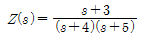
일 때의 영점은?- 4,5
- -4.-5
- 3
- -3
(정답률: 12%)
62. 4단자 정수 A ,B, C, D로 출력측을 개방시켰을 때 입력축에서 본 구동점 임피던스
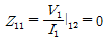
를 표시한 것 중 옳은 것은?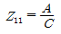
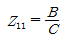
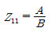
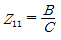
(정답률: 12%)
63. 분포정수회로에서 직렬 임피던스 Z, 병렬어드이턴스를 Y라 할 때, 선로의 특성임피던스 Zo는?
- ZY
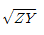
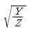
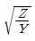
(정답률: 8%)
64. 회로에서 V1(s)를 입력, V2(s)를 출력이라 할 때 전달함수가 1/s+1이 되려면 c[㎌]의 값은?
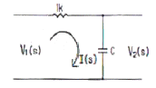
- 10-6
- 10-3
- 103
- 106
(정답률: 8%)
65. 권수가 2,000회이고, 저항이 12[Ω]인 솔레노이드에 전류 10[A]를 흘릴 때 자속이 6x10-2[Wb]가 발생하였다. 이 회로의 시정수는 몇 [sec]인가?
- 0.001
- 0.01
- 0.1
- 1
(정답률: 8%)
66. 기본파의 30[%]인 제3고조파와 20[%]인 제5고조파를 포함하는 전압파의 왜형율은?
- 0.26
- 0.3
- 0.36
- 0.5
(정답률: 11%)
67. R[Ω]의 저항 3개를 Y로 접속한 것을 전압 200[V]의 3상 교류 전원에 연결할 때 선전류가 10[A] 흐른다면, 이 3개의 저항을 △로 접속하고 동일 전원에 연결하면 선전류는 몇 [A]가 되는가?
- 30
- 25
- 20
- 20/√3
(정답률: 12%)
68. R=2[Ω], L=10[mH], C=4[㎌]의 직렬 공진회로의 Q는 얼마인가?
- 25
- 45
- 65
- 85
(정답률: 13%)
69. 저항 R, 커패시턴스 C의 병렬회로에서 전원주파수가 변할 때의 임피던스 궤적은?
- 제1상한내의 반직선
- 제1상한내의 반원
- 제4상한내의 반원
- 제4상한내의 반직선
(정답률: 8%)
70. 각 상의 임피던스가 R+jZ[Ω]인 것을 Y결선으로 한 평형 3상 부하에 선간 전압 E[V]를 가하면 선전류는 몇 [A]가 되는가?
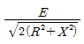
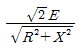
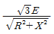
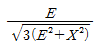
(정답률: 9%)
71. 다음 회로를 블록선도로 그림 것 중 옳은 것은?
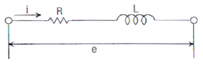
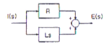
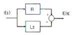
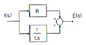
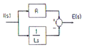
(정답률: 8%)
72. 어떤 제어계에 단위 계단입력을 가하였더니 출력이 1-e-21로 나타났다. 이 계의 전달함수는?
- 1/s+2
- 2/s+2
- 1/s(s+2)
- 2/s(s+2)
(정답률: 4%)
73. 그림과 같은 블록선도에서 전달함수 C/R는 얼마인가? (단, D=R)
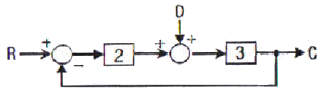
- 6/7
- 8/7
- 9/7
- 11/7
(정답률: 10%)
74. 다음의 논리기호가 나타내는 논리식은?
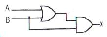
- X = A + B
- X = (A + B) ‧B
- X = A ‧ B + A
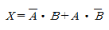
(정답률: 13%)
75. 시퀀스 y(k)의 z 변환을 Y(z)라고 할 때, 시퀀스y(k+n)의 z변환으로 옳은 것은?
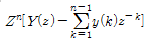
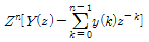
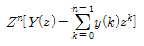
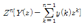
(정답률: 8%)
76.
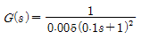
에서 w=10[rad/s]일 때의 이득 및 위상각은?- 20dB, 180°
- 20dB, -90°
- 40dB, -180°
- 40dB, -90°
(정답률: 4%)
77. 단위 계단함수 u(t)의 Z 변환을 나타내는 것은?
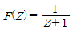
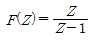
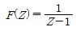
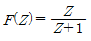
(정답률: 11%)
78. 단위 부퀘한 제어시스템의 개루프 전달함수 G(s)가 다음과 같이 주어져 있다. 이 때 다음 설명 중 틀린 것은?
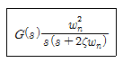
- 이 시스템은 ζ=1.2일 때 과제동 된 상태에 있게 된다.
- 이 폐루프 시스템의 특성방정식은
 이다.
이다. - ζ값이 작게 될수록 제동이 많이 걸리게 된다.
- ζ값이 음의 값이면 불안정하게 된다.
(정답률: 12%)
79. 제어 목적에 의한 분류에 해당되는 것은?
- 프로세서 제어
- 서보 기구
- 자동조정
- 비율제어
(정답률: 5%)
80. 특성방정식
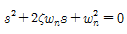
에서 감쇠진 동을 하는 제동비 ζ의 값에 해당되는 것은?- ζ > 1
- ζ = 1
- ζ = 0
- 0 < ζ <1
(정답률: 10%)
5과목: 전기설비기술기준 및 판단기준
81. 전기 집진장치에서 변압기로부터 정류기에 이르는 케이블을 넣는 방호장치의 금속제 부분 및 케이블의 피복에 사용되는 금속체에는 원칙적으로 몇 종 접지공사를 하여야 하는가?
- 제1종 접지공사
- 제2종 접지공사
- 제3종 접지공사
- 특별 제3종 접지공사
(정답률: 6%)
82. 애자사용공사에 의한 지압 옥내 배선시 전선 상호간의 간격은 몇 [cm] 이상이어야 하는가?
- 2
- 4
- 6
- 8
(정답률: 16%)
83. 다음 중 가연성 분진에 전기설비가 발화원이 되어 폭발할 우려가 있는 곳에 시공할 수 있는 저압 옥내 배선은?
- 버스 덕트 공사
- 라이팅 덕트 공사
- 가요전선관공사
- 금속관공사
(정답률: 16%)
84. 교류 전차선 전기철도로서 전차선로의 사용전압이 단상교류 몇 [V] 이하인 것의 전차선로는 전기철도의 전용부지내에 시설하고 또한 전차선은 가공방식에 의하여 시설하여야 하는가?
- 10,000
- 15,000
- 20,000
- 25,000
(정답률: 5%)
85. 다음 중 대지로부터 절연을 하는 것이 기술상 곤란하여 절연을 하지 않아도 되는 것은?
- 항공장애등
- 전기로
- 옥외조명등
- 에어콘
(정답률: 11%)
86. 가변형의 용접전극을 사용하는 아크용접장치의 용접변압기의 1차측 전로의 대지전압은 몇 [V]이하 이어야 하는가?
- 150
- 220
- 300
- 380
(정답률: 14%)
87. 수소 냉각식의 발전기, 조상기는 발전기안 또는 조상기안의 수소의 순도가 몇[%]이하로 저하한 경우에 이를 경보하는 장치를 시설하여야 하는가?
- 70
- 75
- 80
- 85
(정답률: 11%)
88. 특별고압 가공전선로 중 지지물로 직선형의 철탑을 연속하여 10기 이상 사용하는 부분에는 몇 기 이하마다 내장 애자장치가 되어 있는 철탑 또는 이와 동등이상의 강도를 가지는 철탑 1기를 시설하여야 하는가?
- 3
- 5
- 8
- 10
(정답률: 9%)
89. 옥내에 시설하는 전동기에는 과부하 보호장치를 시설하여야 하는데, 단상전동기인 경우에 전원측 전로에 시설하는 과전류차단기의 정격전류가 몇 [A] 이하이면 과부하 보호장치를 시설하지 않아도 되는가?
- 10
- 15
- 30
- 50
(정답률: 15%)
90. 변전소에 울타리·담 등을 시설할 때, 사용전압이 345 [kV]라면 울타리·담 등의 높이와 울타리·담 등으로부터 충전부분까지의 거리의 합계는 몇 [m]이상으로 하여야 하는가?
- 6.48
- 8.16
- 8.40
- 8.28
(정답률: 10%)
91. 제2종 접지 공사에 사용하는 접지선을 사람이 접촉할 우려가 있는 곳에 시설하는 경우, 접지선의 어느 부분을 합성수지관 또는 이와 동등 이상의 절연효력 및 강도를 가지는 몰드로 덮어야 하는가?
- 지하 30cm로부터 지표상 2m까지
- 지하 50cm로부터 지표상 1.2m까지
- 지하 60cm로부터 지표상 1.8m까지
- 지하 75cm로부터 지표상 2m까지
(정답률: 10%)
92. 기공 전선로의 지지물에 하중이 가하여지는 경우에 그 하중을 받는 지지물의 기초의 안전율은 일반적인 경우 얼마 이상이어야 하는가?
- 1.2
- 1.5
- 1.8
- 2
(정답률: 10%)
93. 가공전선로에 사용하는 지지물을 강관으로 구성되는 철탑으로 할 경우, 지지물의 강도계산에 적용하는 병종풍압하중은 구성재의 수직투영면적 1[m2]에 대한 풍압의 몇 [kgf]를 기초로 하여 계산하는가? (단, 단주는 제외한다.)
- 441
- 627
- 7⑤
- 1078
(정답률: 8%)
94. 시가지에 시설하는 통신선을 특별고압 가공전선로의 지지물에 시설하여서는 아니 되는 것은?
- 지름 3.6[mm]의 절연 전선
- 첨가 통신용 제1종 케이블
- 첨가 통신용 제2종 케이블
- 광섬유 케이블
(정답률: 7%)
95. 지중전선로를 직접 매설식에 의하여 차량 기타 중량물의 압력을 받을 우려가 없는 장소에 기준에 적합하게 시설할 경우 매설 깊이는 최소 몇[cm] 이상이면 되는가?
- 60
- 80
- 100
- 120
(정답률: 10%)
96. 시가지에서 저압 가공전선로를 도로에 따라 시설할 경우 지표상의 최저 높이는 몇[m] 이상이어야 하는가?
- 4.5
- 5
- 5.5
- 6
(정답률: 6%)
97. 사용전압이 35,000[V]를 넘고 100,000[V]미만인 특별고압 가공 전선로의 지지물에 고압 또는 저압 가공전선을 병가할 수 있는 조건으로 틀린 것은?
- 특별고압 가공전선로는 제2종 특별고압 보안공사에 의한다.
- 특별고압 가공전선과 고압 또는 저압가공전선과의 이격거리는 0.8m 이상으로 한다.
- 특별고압 가공전선은 케이블인 경우를 제외하고 단면적이 55mm2인 경동연선 또는 이와 동등 이상의 및 굵기의 연선을 사용한다.
- 특별고압 가공전선로의 지지물은 강판조립주를 제외한 철주, 철근콘크리트주 또는 철탑이어야 한다.
(정답률: 6%)
98. 고·저압 혼촉시에 저압전로의 대지전압이 150[V]를 넘는 경우로서 1초를 넘고 2초 이내에 자동차 단장치가 되어 있는 고압전로의 1선 지락전류가 30[A]인 경우, 이에 결합된 변압기 저압측의 제2종 접지저항 값은 몇[Ω] 이하로 유지하여야 하는가?
- 10
- 15
- 20
- 30
(정답률: 10%)
99. 특별고압 지중전선과 고압 지중전선이 서로 교차하며, 각 각의 지중전선을 견고한 난연성의 관에 넣어 시설하는 경우, 지중함내 이외의 곳에서 상호간의 이격거리는 몇cm 이하로 시설하여도 되는가?
- 30
- 60
- 100
- 120
(정답률: 6%)
100. 지중에 매설되어 있고 대지와의 전기저항 값이 몇[Ω] 이하의 값을 유지하고 있는 금속제 수도관로는 이를 각 종 접지공사의 접지극으로 사용할 수 있는가?
- 2
- 3
- 5
- 10
(정답률: 10%)